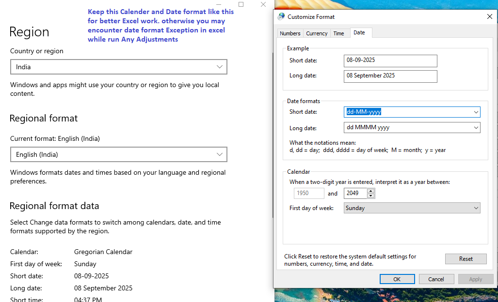
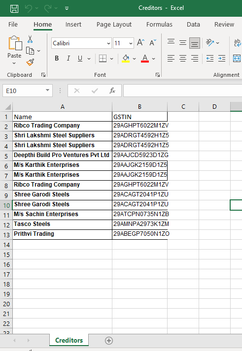
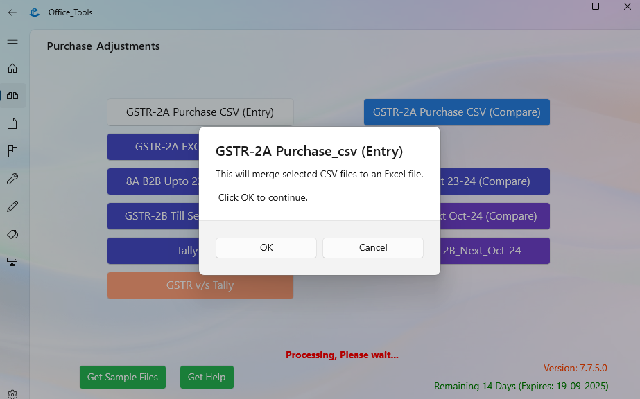
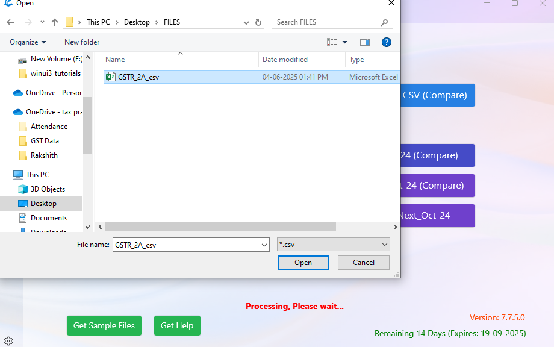
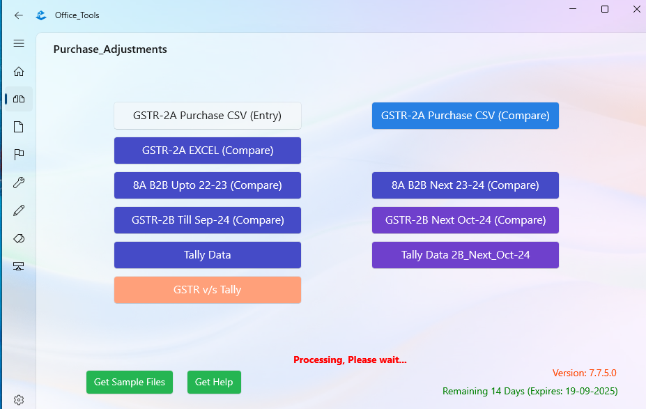
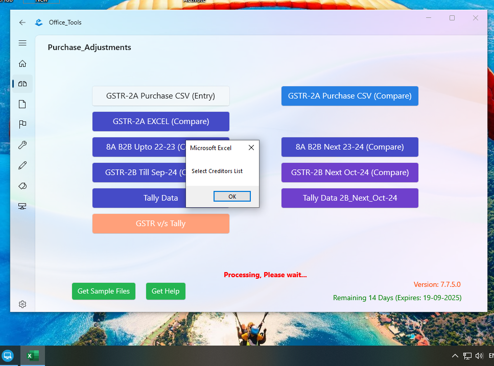
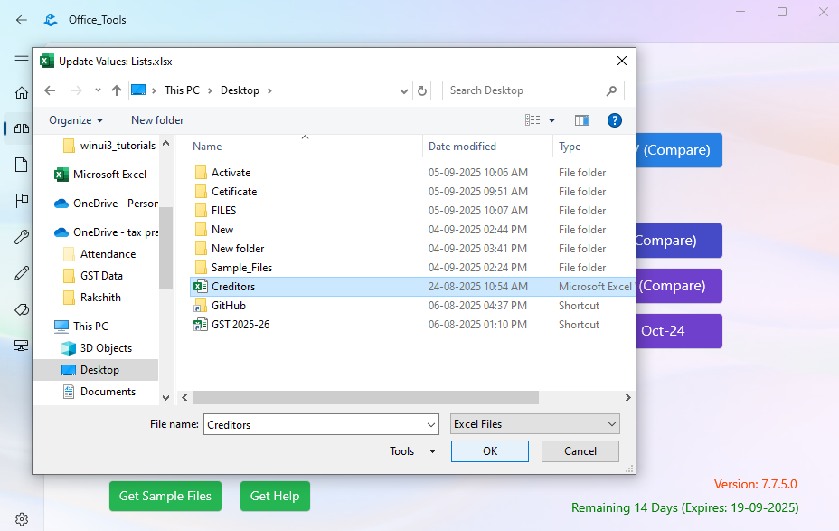
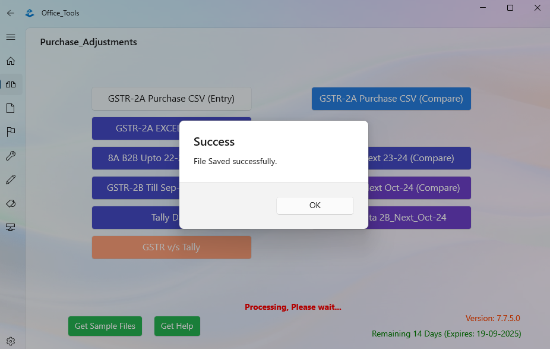
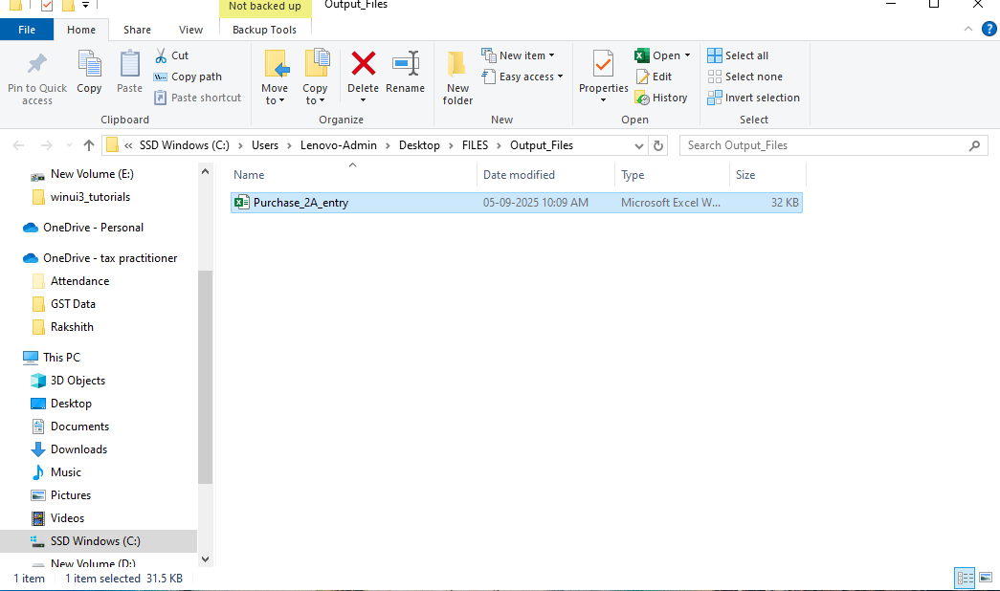
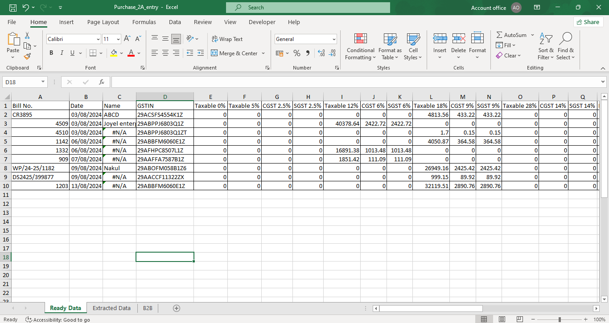

All type of Adjustments
Guide for All type of Adjustments
- Keep this Calender and Date format like this for better Excel work.
otherwise you may encounter date format Exception in excel while run Any Adjustments

- In excel you have to enable macro in File> Options> Trust Center> Trust Center Settings> Macro Settings
(if not enabled all Adjustments work will get failed)
After close app will automatically reset to disable. check below last image

- Prepare Creditors List

- Select csv or excel file as per need


- Select Creditors excel file which is created (See Task Bar for excel icon and click)



- Repeat the process selecting until different asks
- Open File generated file and see for errors in Ready Datasheet



- After Close Office_Tools app will automatically set back to disable state for safety

Back to Home